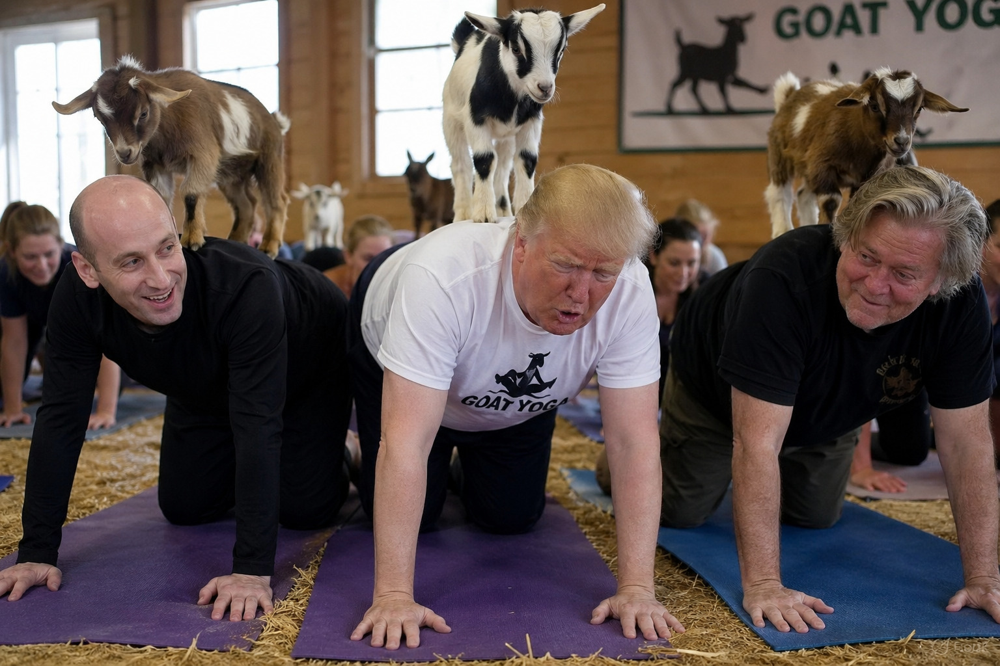

White House Confirms Trump Managing Iran War Stress Through “Advanced Goat Yoga Strategy”
Officials say the president has adopted an unconventional resilience routine while fundamentally misunderstanding the goats.

PALM BEACH, FL — Facing what aides describe as “a uniquely stabilized but continuously escalating situation” in Iran, President Donald Trump has adopted an unconventional stress-management regimen involving goat yoga, a practice in which participants perform stretching exercises while goats roam freely and occasionally climb on them.
Officials say the sessions are part of a broader effort to maintain what one adviser called “peak strategic calm under conditions of total unpredictability.”
During a closed press availability, Trump explained the decision in detail.
“It’s incredible, really incredible,” Trump said, positioned on all fours as a small goat assessed his back. “The goats—they’re very smart animals, very strong. They come up, they stand on you, which is what you want. It’s like having generals. Tiny generals. They’re stabilizing you.”
Witnesses described the president maintaining a modified plank position while offering ongoing analysis of the goats’ performance.
“They’re climbing because they respect strength,” Trump continued. “If you’re weak, they don’t climb. People don’t know that. These goats, they sense power. So when they’re on you, it means you’re doing very well, probably the best in the class.”
Instructors attempted to explain that goat yoga is typically intended to reduce stress through light interaction and humor, as goats wander, nuzzle participants, or perch briefly during poses. Administration officials, however, say the president has interpreted the activity as “a form of dynamic leadership training.”
At one point, Trump reportedly attempted to direct a goat off his back using what aides described as “verbal authority cues,” before concluding the animal was “choosing to remain for strategic reasons.”
Senior staff say the sessions have had a measurable impact.
“He leaves calmer,” one aide confirmed. “More centered. Still fully convinced the goats are part of a command structure, but calmer.”
The White House has not ruled out expanding the program, with sources indicating officials are exploring whether additional animals could be introduced “to increase stability across multiple fronts.”
Trump, for his part, remains enthusiastic.
“You don’t even have to do the yoga,” he said. “The goats do it for you. That’s the secret nobody understands.”